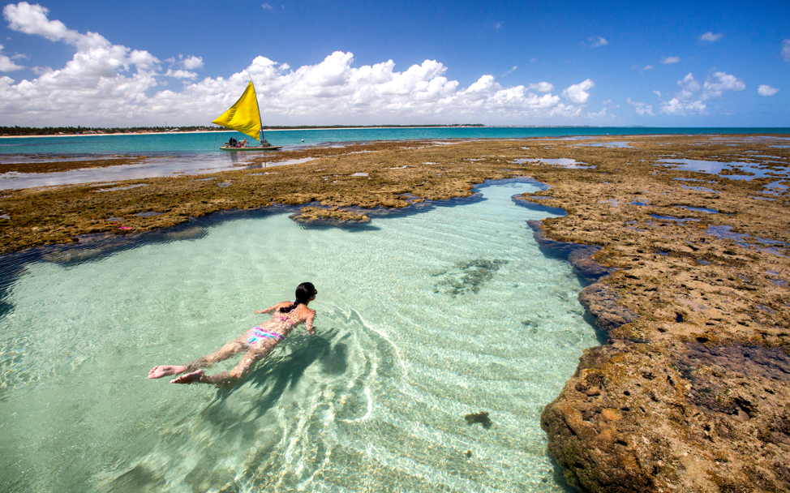
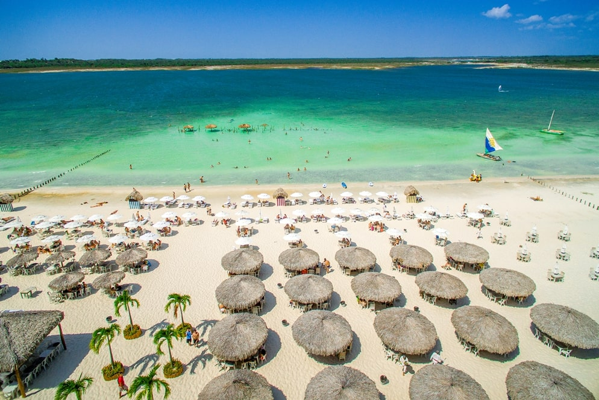
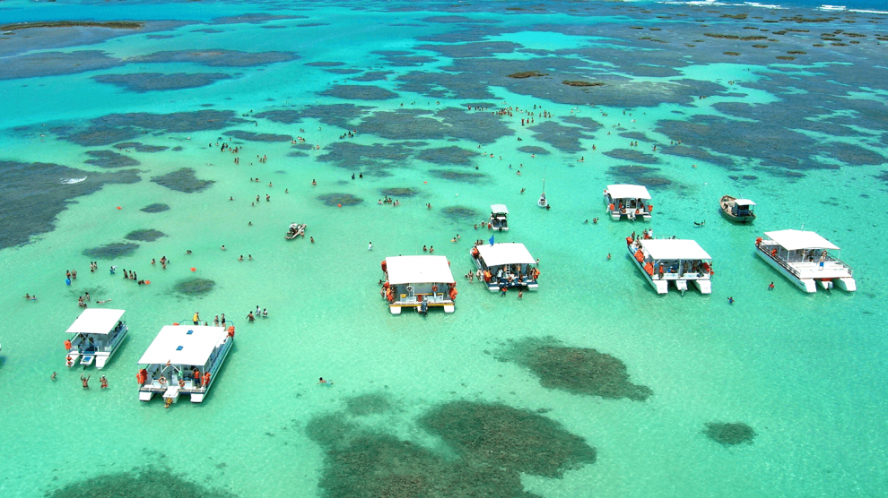
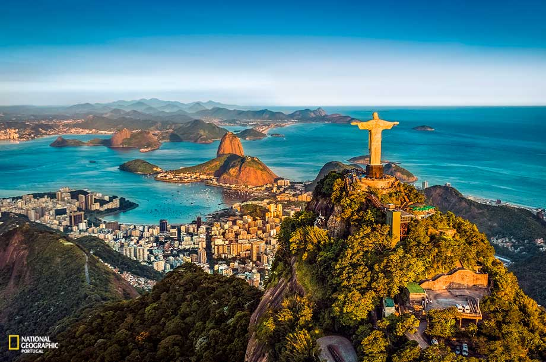
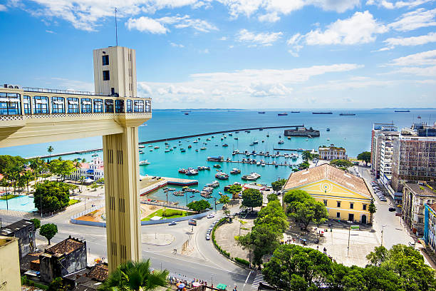
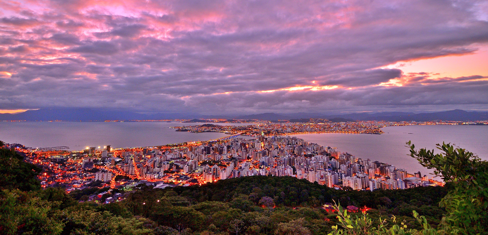
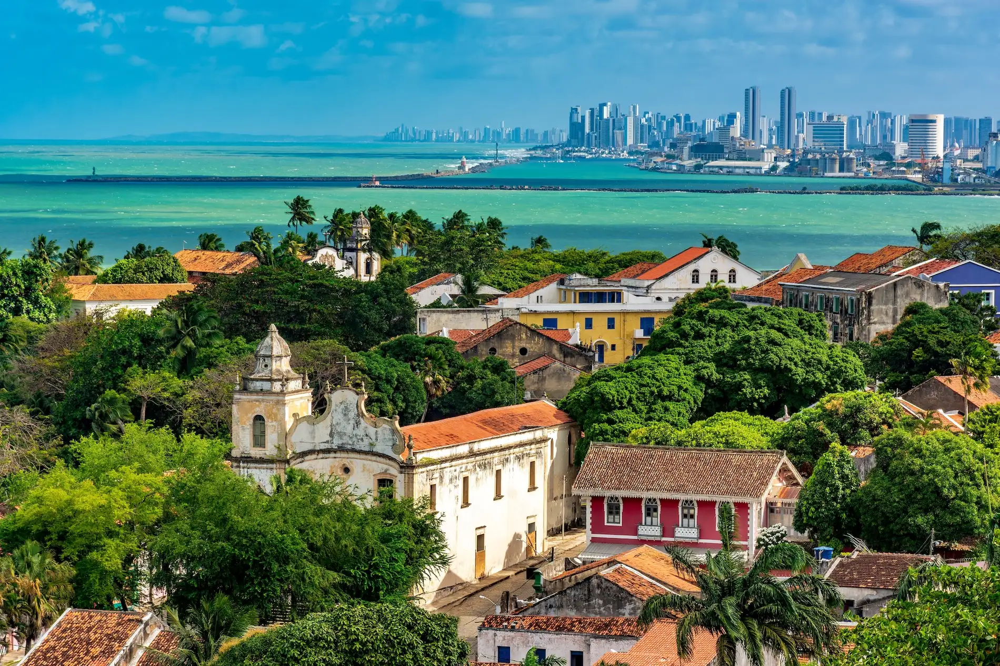
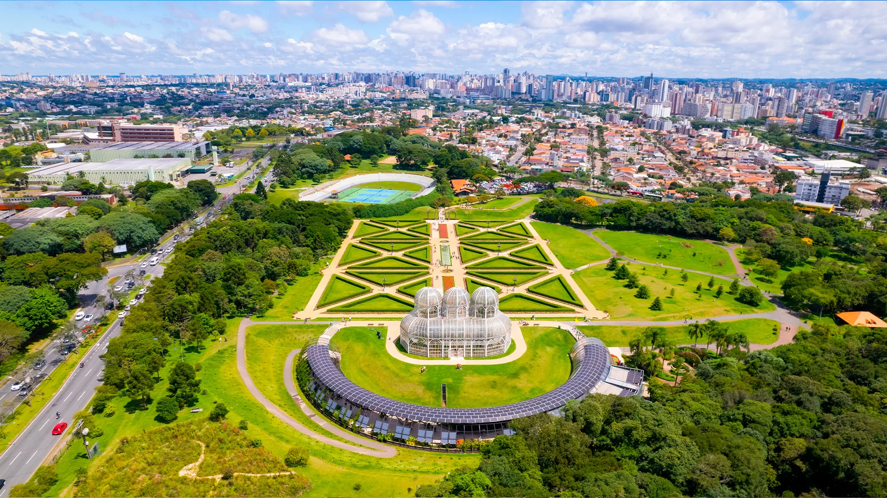

Destinos Turísticos
Top 5 Praias do Brasil

Praia de Copacabana
Uma das praias mais famosas do Brasil, conhecida por sua bela extensão de areia e vida noturna agitada.

Praia de Porto de Galinhas
Uma das praias mais belas do Brasil, conhecida por suas águas cristalinas e paisagem deslumbrante.

Praia de Jericoacoara
Uma das praias mais paradisíacas do Brasil, conhecida por suas dunas de areia e águas cristalinas.

Praia do Forte
Uma das praias mais belas do Brasil, conhecida por sua paisagem deslumbrante e águas cristalinas.

Praia de Maragogi
Conhecida como o "Caribe Brasileiro", por suas águas cristalinas e paisagem tropical.
Top 5 Cidades do Brasil

Rio de Janeiro
Conhecida por suas praias icônicas, como Copacabana e Ipanema, e pelo Cristo Redentor.

Salvador
Famosa por sua rica cultura afro-brasileira, arquitetura colonial e festas animadas.

Florianópolis
Conhecida por suas belas praias, vida noturna vibrante e natureza exuberante.

Recife
Famosa por sua cultura rica, praias urbanas e o histórico bairro do Recife Antigo.

Curitiba
Conhecida por seu planejamento urbano inovador, parques e clima ameno.
Informações Úteis
Antes de viajar, é importante verificar as condições climáticas, a segurança e as opções de transporte para o destino escolhido.
Clima
O clima no Brasil varia de tropical a temperado, dependendo da região.
Segurança
É importante estar atento à segurança, especialmente em áreas turísticas.
Transporte
O Brasil possui uma rede de transporte diversificada.